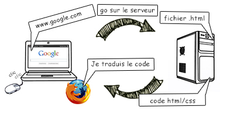

Que faisons-nous
Oikima est une entreprise d’hébergement en ligne. Elle peut héberger des sites web ou des données ou même des parties de jeux en ligne. C’est grâce a ce type d’entreprise que vous pouvez regarder des vidéos sur Tiktok ou sur youtube que vous pouvez jour avec vos amis sur Fornite.
Où sommes-nous
On se situe Hamois Région Wallone

Mais pourquoi cet emplacements ? Tout simplement parce que la wallonie est la seul région a posséder la fibre optique(c’est un type de connexion beaucoup plus rapide). Ça nous coutera donc moins cher de l’installer. Et dans une prairie pour avoir beaucoup de place.
Quelle secteur
Nous somme dans le secteur tertiaire car nous vendons un service qui permet aux entreprises ou aux particuliers de poster leurs sites web, pour faire un cloud ou même pour travailler sur un projet en commun.
Comment ça marche
Quand vous allez sur un site ou sur tiktok généralement sa ce pase comme ça
Ici on va prendre Tiktok comme exemple. Quand vous voulez voir une nouvelle vidéo votre téléphone va demander au serveur les packets(ici une vidéo). Hors le téléphone ne peut pas demander directement au serveur car trop loin. Alors le signal passe par votre box wifi qui ensuite va jusqu’au serveur une fois le signal arrivé au serveur, le serveur regarde ce que vous avez demandé et envoie le packet à votre box wifi qui ensuite parvient jusqu’a votre téléphone. Oikima prends la place du serveur.
Quelles sont nos partenaires
Nous avons trois partenaires. DellTechnologies qui nous fournissent les serveurs. Proximus qui nous fournit internet et enfin Edf qui nous fournit en électricité verte